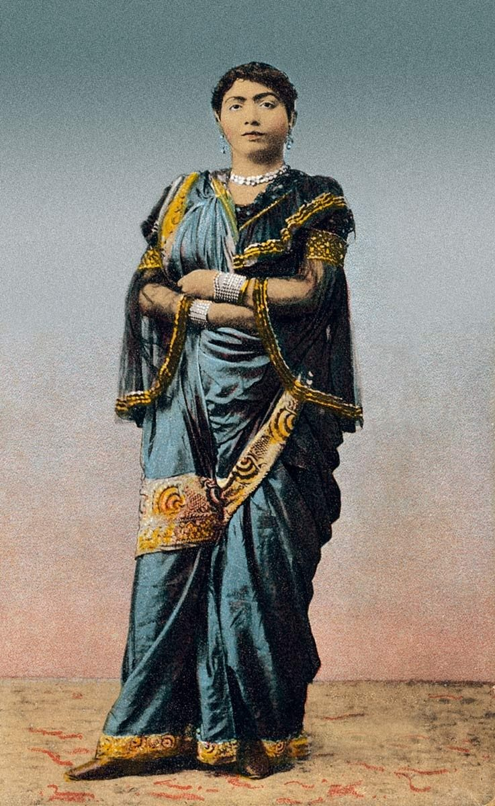

Chapter 23: Performing Arts in Modern and Contemporary India¶
The preceding chapters have repeatedly reached the twentieth century, when every one of India’s performing arts was transformed, and each has told part of the story. Taken together, those transformations raise questions that no single art can answer: who pays for the arts when courts and temples no longer do, what recording and broadcasting did to them, and what becomes of an art when it travels. The sections that follow take up the institutions created by the independent Indian state and by civil society to support music, dance and theatre; the effect of radio, recording, film, television and the internet; the travels of Indian performers and their arts across the world and the growth of diaspora communities of practice; contemporary choreography and music that work with and against tradition; claims about the therapeutic uses of the arts; and the questions of caste, gender, livelihood and education that shape the arts today. It ends with some reflections on what the history told in this volume means for the future.
23.1 Patronage and Institutions¶
23.1.1 From court and temple to state and market¶
Until the nineteenth century the performing arts were supported mainly by courts, temples, religious institutions, wealthy households and the communities that sponsored festivals and rituals. The colonial period and the abolition of the princely states after 1947 ended most court patronage; the decline of hereditary obligations, the reform movements against dedicated temple women and courtesans, and the growth of cities shifted support to new patrons: urban audiences buying tickets, the music societies (sabhās) of Madras and the music circles of the north, the recording and film industries, and the state (Chapters 7, 8 and 15).
23.1.2 National institutions¶
After Independence the government of India created a set of national institutions for the arts. The Sangeet Natak Akademi, the national academy of music, dance and drama, was established in 1952 and inaugurated in 1953. It gives annual awards and fellowships, supports festivals, documentation and publication, and has played a decisive part in defining which dance forms are “classical” (Chapter 1). The National School of Drama (1959) trains theatre artists; the Kathak Kendra (1964) and the Jawaharlal Nehru Manipur Dance Academy (1954) are among its specialised institutes. The Indira Gandhi National Centre for the Arts (1987), the regional Zonal Cultural Centres (from 1985) and state academies support documentation and the performance of folk and tribal arts. Earlier private institutions, such as Kalakshetra (1936), the Kerala Kalamandalam (1930), the music schools founded by Bhatkhande and Paluskar and Tagore’s Visva-Bharati at Santiniketan, were joined by university departments: the Indira Kala Sangit Vishwavidyalaya at Khairagarh, founded in 1956, was the first university devoted to music and the performing arts (Dharwadker 2005; Subramanian 2006).
23.1.3 Honours and festivals¶
The state honours performers with the Padma awards and, in a few cases, the Bharat Ratna, India’s highest civilian award, which has been given to the singer M. S. Subbulakshmi (1998), the sitārist Ravi Shankar (1999), the śahnāī player Bismillah Khan and the film singer Lata Mangeshkar (both 2001), and the singer Bhimsen Joshi (2009), among performing artists. Festivals — the December music season of Chennai, the Sawai Gandharva festival in Pune, the Dover Lane conference in Kolkata, dance festivals held at the temples of Khajuraho and Konark, the National School of Drama’s Bharat Rang Mahotsav — are central to the life of the arts. The Society for the Promotion of Indian Classical Music and Culture Amongst Youth (SPIC MACAY), founded in 1977, has brought performers to schools and colleges throughout India.
23.1.4 The state and “classical” culture¶
State support has been indispensable, and also shaping. By defining certain forms as “classical” and others as “folk”, by choosing whom to honour and whom to send abroad, and by presenting the arts as the expression of a unified national heritage, the institutions of the state and of the urban cultural elite have influenced which traditions flourish and how they are understood. The histories in Chapters 15 to 18 show how the “classical” dance forms were constructed through this process, and Chapter 21 how folk and tribal arts were presented as national heritage. These processes are not unique to India — every modern state has made a national culture — but they need to be understood if the arts are to be studied and supported intelligently.
23.2 Radio, Recording, Film and Television¶
23.2.1 Recording¶
The first commercial recordings of Indian performers were made in Calcutta in November 1902 by the recording engineer Frederick Gaisberg of the British Gramophone Company, and within a decade the company and its competitors had recorded thousands of performers in the major cities of the subcontinent. Michael Kinnear’s discography of these early recordings shows how wide the net was cast: courtesan singers of ṭhumrī, ghazal and dādrā, actors and actresses of the Bengali, Parsi and Marathi stage, khayāl singers, instrumentalists, reciters of religious texts and singers of regional and devotional songs (Kinnear 1994). Gauhar Jan, one of the first artists recorded, became the first star of the Indian gramophone (below); in the following decades singers such as Janki Bai of Allahabad, Abdul Karim Khan and, in the south, Bangalore Nagarathnamma reached audiences far beyond their patrons. The Gramophone Company opened a record-pressing factory near Calcutta in 1908, and its “His Master’s Voice” label dominated the Indian market for most of the century.
The technology shaped the music. The 78 rpm record, limited to about three minutes a side, encouraged short forms — ṭhumrī, ghazal, devotional and film songs — and condensed versions of classical performances in which a rāga had to be presented in miniature; the long-playing record from the 1950s, and later the cassette and the compact disc, allowed full-length performances to circulate. The microphone, which reached the concert hall in the 1930s, changed the ideal of the voice, allowing a softer, more intimate style of singing and new balances between voice and instruments; Amanda Weidman has traced its effects on Karnatak singing (Weidman 2006). Recordings also preserved the art of performers who had no other record, among them many of the courtesan singers whose names survive only on the labels of early discs. In the 1980s cheap cassettes, as Peter Manuel has shown, broke the monopoly of the large record companies and created markets for regional, devotional and folk music that had never been recorded commercially (Manuel 1993).
23.2.2 The record business and its artists¶
The early record trade was fiercely competitive. Besides the Gramophone Company, European firms such as Nicole, Beka, Odeon and Pathé sent recording engineers on tours of the subcontinent in the decade before the First World War, and Indian dealers organised local sessions. The engineers recorded in hotel rooms and offices, on wax masters that were shipped to Europe for pressing; the earliest Indian discs were pressed in Hanover until the company’s Indian factory opened. To identify the singer to the distant engineers, many artists announced themselves at the end of a recording, and the cry “My name is Gauhar Jan” at the close of her discs became famous. Vikram Sampath’s biography of Gauhar Jan (1873–1930), a courtesan singer of Calcutta, of Armenian descent, who recorded several hundred sides in more than ten languages (Figure 23.1) and commanded fees that astonished contemporaries, shows how the first recording stars came from the world of the salon that the reformers were trying to close (Sampath 2010). Gerry Farrell has described how the companies chose what to record and how to sell it to an audience divided by language, region and religion, so that the record market mapped and in some ways created the categories through which Indian music was sold (Farrell 1993).


The records also changed what was performed. Singers compressed an ālāp and a composition into three minutes, chose short and popular genres, and adapted their art to the limits of the horn and, later, the microphone. In the south, Stephen Hughes has shown, the record companies of Madras turned the songs of the Tamil company drama into a mass commodity in the 1910s and 1920s, recording star singer-actors such as S. G. Kittappa and K. B. Sundarambal; when sound cinema arrived, these recordings had already made the theatre song a popular genre with its own stars, and early Tamil cinema was built on them (Hughes 2007). The modern song of the regional languages, whose history is told in Chapter 11, grew up in the same studios.
23.2.3 Radio¶
Broadcasting began in India in the 1920s with amateur radio clubs and a private Indian Broadcasting Company, which opened stations in Bombay and Calcutta in 1927. The government took over the service in 1930 and in 1936 renamed it All India Radio; after Independence it adopted the Hindi name Ākāśvāṇī. From the beginning music filled most of its hours, and All India Radio became the largest employer of musicians in India and an instrument of cultural policy. Its system of auditioning artists and grading them for fees and broadcasts, its staff musicians at every station, its National Programme of Music (from 1952) and its annual music festival made it the most important single patron of classical music after the princely courts, and a musician’s radio grade became a public measure of standing.
David Lelyveld has described how the radio’s administrators, from the colonial period onwards, saw themselves as guardians of a national musical standard and used broadcasting to shape taste (Lelyveld 1994). Under B. V. Keskar, Minister of Information and Broadcasting from 1952 to 1962, All India Radio emphasised classical music and restricted the broadcasting of film songs; listeners turned to Radio Ceylon, whose Hindi film-song programmes drew huge audiences, until All India Radio created its own popular channel, Vividh Bharati, in 1957.
The policies had a history. The first Controller of Broadcasting, Lionel Fielden, lent by the BBC in 1935, and the British composer John Foulds, who became director of European music at Delhi in 1937 and formed an orchestra of Indian and European instruments, shared with many Indian intellectuals the view that broadcasting should raise public taste. Matthew Rahaim has shown that the harmonium ban grew out of arguments, advanced by scholars, administrators and critics such as Rabindranath Tagore rather than by performers, that the tempered keyboard was alien to Indian intonation; the instrument, ubiquitous in devotional, theatrical and light classical music, was nevertheless kept off the air until 1971 and readmitted only gradually (Rahaim 2011). After Independence Keskar tightened the auditioning and grading of artists by panels of experts, encouraged the composition of “light music” on the model of the regional modern song as an alternative to film music, and limited the film songs that the radio played. On Radio Ceylon the weekly countdown of film songs Binaca Geetmala, presented from 1952 by Ameen Sayani, became one of the most popular radio programmes in South Asia. Isabel Huacuja Alonso has argued that listeners’ letters, request programmes and the reception of Indian, Pakistani and Ceylonese stations across the new borders made Hindi-Urdu radio a shared public space that escaped the control of the states that owned the transmitters (Huacuja Alonso 2023). Regional stations broadcast folk, devotional and light music in the regional languages and employed many performers of these traditions. Whatever its paternalism, the radio gave musicians a regular income at a time when court patronage had disappeared, and its archives preserve recordings of almost every important musician of the twentieth century.
23.2.4 Film¶
From the coming of sound in 1931, Indian cinema was a cinema of song and dance, and film music became the most widely heard music in India. The first Indian sound feature, Alam Ara (1931), already contained several songs, and the early sound films, many of them adapted from the plays of the Parsi and other company theatres (Chapter 19), were full of them. At first actors sang their own songs, and singer-actors such as K. L. Saigal were the stars of the 1930s; from the mid-1930s the practice of “playback”, in which songs were recorded in advance by professional singers and mimed by the actors, spread rapidly, and the playback singer became a figure of national fame. The studios of the 1930s — New Theatres in Calcutta, Prabhat in Pune, Bombay Talkies — employed music directors, singers and orchestras, and later the independent producers of Bombay and Madras hired them film by film.
Playback is usually said to have been first used in the New Theatres production Bhāgya Cakra (1935) and its Hindi version Dhoop Chhaon, whose music director was R. C. Boral; the idea is credited to the director Nitin Bose and the sound recordist Mukul Bose. Separating the singing voice from the acting body had large consequences. It allowed actors who could not sing to become stars and singers who did not act to become famous, and it concentrated the singing of an entire industry in a handful of voices. In the 1930s and 1940s several women composed for the screen — Jaddanbai, a courtesan singer who became a producer and music director, and Saraswati Devi (Khorshed Minocher-Homji), a Parsi musician who composed for Bombay Talkies — and the composer Ghulam Haider brought the rhythms of Punjabi folk music to the film song of Lahore and Bombay and launched the careers of Noor Jehan, who moved to Pakistan in 1947, and of the young Lata Mangeshkar. Lata Mangeshkar’s high, light and precise voice became, from about 1949, the dominant sound of the Hindi film heroine. Neepa Majumdar has shown how the separation of voice and body in playback allowed the film industry to attach to its heroines a voice of purity and respectability, distinct from the heavier, “professional” voices of the courtesan-trained singers of the previous generation (Majumdar 2009). Ashok Ranade’s study of the Hindi film song treats it as a genre in its own right, eclectic by design, which absorbed rāga, folk, devotional, theatrical and foreign music into a form that every Indian could recognise (Ranade 2006).
The music director composed the songs, often from a mixture of rāga, folk and devotional melody and Western popular music, while arrangers, many of them Goan musicians trained in Western music, wrote the orchestral parts for large studio ensembles of violins, mandolins, accordions, Indian instruments and later electronic keyboards. Gregory Booth’s study of the Bombay studio musicians describes this world of composers, arrangers and players and the division of labour that produced the Hindi film song (Booth 2008). Among the most celebrated composers of the Hindi cinema were Naushad, S. D. Burman, Shankar–Jaikishan, C. Ramchandra, Madan Mohan, Salil Chowdhury and R. D. Burman; among its singers Lata Mangeshkar (1929–2022), Mohammed Rafi (1924–1980), Kishore Kumar, Mukesh and Asha Bhosle. Classical musicians also worked for the cinema: in Baiju Bawra (1952), a film about a legendary rival of Tānsen, Naushad set songs in classical rāgas and used the voices of D. V. Paluskar and Amir Khan; Bade Ghulam Ali Khan sang for Mughal-e-Azam (1960); and Ravi Shankar wrote the music for Satyajit Ray’s first films. In the south, Tamil, Telugu, Kannada and Malayalam cinema developed their own traditions, from the singer-actor M. K. Thyagaraja Bhagavathar and the composers G. Ramanathan and K. V. Mahadevan to the partnership of M. S. Viswanathan and T. K. Ramamoorthy, Ilaiyaraaja, who from 1976 combined Tamil folk music with Western orchestral writing, and A. R. Rahman, whose work from the 1990s reached audiences throughout India and abroad.
Film dance drew on Kathak, Bharatanāṭyam, folk dance and, increasingly, global popular dance, and its choreographers created a hybrid idiom of their own. Anna Morcom’s study shows how film songs function within their films — as expressions of feeling, as dreams, as performances within the story — and how they circulate beyond them in radio, recordings and live performance (Morcom 2007). Film gave employment to many musicians and dancers trained in classical and hereditary traditions, and dancer-actresses such as Vyjayanthimala and Hema Malini were trained classical dancers. It also carried forward, often in stereotyped form, the figure of the courtesan dancer that the classical revival had tried to leave behind, and it offered work to professional women performers excluded from the respectable classical world, a history explored in Morcom’s study of “illicit” dance (Morcom 2013).
23.2.5 Television and the internet¶
National television (Doordarshan, from 1959, expanding greatly from the 1980s) broadcast classical music and dance programmes as part of its public service; private television from the 1990s turned instead to film-based entertainment and talent contests. The internet and social media have made vast archives of recordings available, allowed teachers to teach students on other continents, and created new audiences and new forms of self-presentation for performers; they have also intensified competition for attention and reduced income from recordings. During the COVID-19 pandemic of 2020–21, when live performance stopped, online concerts and classes became a lifeline for many artists, and the crisis exposed the economic precariousness of most performers.
23.2.6 Archives¶
Archives of recorded sound and film, among them the archives of All India Radio and the Sangeet Natak Akademi, the Archives and Research Centre for Ethnomusicology of the American Institute of Indian Studies, and many private collections, preserve a large part of the twentieth century’s music and dance. For the reader who wants to listen, they are the best starting point: the archive of All India Radio holds broadcasts of almost every important musician of the century, the Archives and Research Centre for Ethnomusicology holds field recordings of folk, tribal and ritual music from across the subcontinent, and Kinnear’s discography identifies the earliest commercial records, from Gauhar Jan onwards, some of which have since been reissued (Kinnear 1994). Digital recording cannot replace the embodied transmission from teacher to student on which the arts depend — a point every performer makes — but it has changed how students learn, how artists measure themselves against the past, and how scholars study the history of performance.
23.3 The Arts Abroad¶
23.3.1 Dancers and musicians on the world stage¶
Indian performers have travelled abroad since the nineteenth century, but the international career of Indian dance began in earnest in the 1920s and 1930s. Uday Shankar (1900–1977), who partnered the ballerina Anna Pavlova and then founded his own company in Paris in 1931, created a theatrical dance that drew freely on classical and folk forms; his school at Almora (1938–1944) and his film Kalpana (1948) influenced a generation of Indian dancers, and Prarthana Purkayastha has placed his work in the history of Indian modern dance (Purkayastha 2014). Ram Gopal, Menaka and others toured Europe and America in the same period.
In music, the decisive figure was Ravi Shankar, whose tours from the 1950s, his collaborations with the violinist Yehudi Menuhin and his teaching of George Harrison of the Beatles made the sitār and Hindustani music known to audiences worldwide in the 1960s; he performed at the Monterey and Woodstock festivals and organised the Concert for Bangladesh (1971). Ali Akbar Khan founded a college of music in California in 1967. Gerry Farrell and Peter Lavezzoli have described the encounter of Indian music with Western classical, jazz and popular music, from the “raga rock” of the 1960s to the collaboration of the guitarist John McLaughlin with Zakir Hussain, L. Shankar and T. H. Vinayakram in the group Shakti (from 1975) (Farrell 1997; Lavezzoli 2006). These encounters were often unequal — Western musicians borrowed Indian sounds as exotic colour — but they also created lasting exchanges.
23.3.2 Diaspora communities¶
The South Asian diaspora in Britain, North America, the Gulf, South-east Asia, Africa, the Caribbean and Australia has created its own institutions of music and dance: schools, temples and community halls where classical music and dance are taught, festivals such as the Tyāgarāja Ārādhana of Cleveland (Chapter 8), and a large professional class of teachers. For many families, learning Bharatanāṭyam or Karnatak music is a way of transmitting identity across generations; the araṅgēṯṯam has become a major rite of passage (Chapter 15). Janet O’Shea’s study of Bharatanāṭyam on the global stage shows how diaspora dancers have shaped the form, and how its meanings shift between Chennai, Toronto and London (O’Shea 2007). In Britain, choreographers such as Shobana Jeyasingh and Akram Khan have used Indian classical training to create contemporary dance recognised in the mainstream of British culture.
23.4 Contemporary Choreography and Music¶
23.4.1 Dance¶
Indian contemporary dance has grown from two roots: the modern dance of Uday Shankar and his successors, and the work of classically trained dancers who sought new forms. The most influential figure of the second group was Chandralekha (1928–2006), whose critique of the classical forms is described in Chapter 13 (Bharucha 1995). Kumudini Lakhia in Ahmedabad broke Kathak away from the solo format and the conventional themes of love and devotion; Astad Deboo (1947–2020) developed a contemporary solo style drawing on Kathak and Kathakaḷi; Daksha Sheth, Mallika Sarabhai, Aditi Mangaldas and many others have created new work, and institutions such as Attakkalari in Bengaluru have trained contemporary dancers. Ketu Katrak’s survey of contemporary Indian dance in India and the diaspora describes how choreographers address gender, caste, sexuality, the environment and the nation (Katrak 2011). Within the classical forms, dancers such as Alarmel Valli, Malavika Sarukkai, Madhavi Mudgal and Leela Samson have explored new interpretations and new poetry while working within the classical vocabulary.
23.4.2 Music¶
Classical musicians have also experimented: with orchestral settings (Ravi Shankar’s sitār concertos), with collaborations between Hindustani and Karnatak musicians (jugalbandī), with Western classical, jazz and electronic musicians, and with new instruments adapted to Indian music, such as the slide guitar of Vishwa Mohan Bhatt and the mandolin of U. Srinivas. The boundary between “classical” and “fusion” is contested, and the market for fusion has grown much faster than that for classical concerts. At the same time, there has been a revival of interest in older and rarer forms — dhrupad, the rudra vīṇā, the padam and jāvaḷi of the hereditary dancers — and in the history of the communities who created them.
23.4.3 Popular music beyond film¶
Film song dominated Indian popular music for most of the twentieth century, but it was never the only popular music, and its dominance has weakened since the 1980s. The cassette boom created large markets for devotional music, regional popular songs — Bhojpuri, Punjabi, Garhwali, Rajasthani and many more — and ghazal, often sung by performers who had no connection with cinema (Manuel 1993). Punjabi bhāṅgṛā, transformed in the British Punjabi diaspora of the 1980s into a dance music that combined the ḍhol with electronic beats, travelled back to India and became one of the most popular musics of the subcontinent. Independent rock, pop, electronic and hip-hop scenes have grown in Indian cities since the 1990s, and in the twenty-first century hip-hop in particular has given young people from working-class, Dalit, Ādivāsī and minority communities a medium in which to speak about caste, religion, migration and urban life in their own languages. These musics are often ignored in surveys of “Indian” music, but for most young Indians they are the music of everyday life, and many of their performers draw consciously on folk, devotional and classical sources.
23.4.4 A shared subcontinental heritage¶
The traditions described in this volume do not belong to the Republic of India alone. Hindustani music, Kathak, qawwālī and ghazal are equally the heritage of Pakistan; the Bāul songs, Rabīndrasaṅgīt and much of the music of Bengal belong also to Bangladesh; Karnatak music and Bharatanāṭyam are central to the culture of the Tamils of Sri Lanka; and Nepal has its own traditions of court, temple and folk music, closely linked with those of north India. After 1947 the arts in each country developed under different conditions: in Pakistan, official ambivalence towards dance and some forms of music in certain periods coexisted with the global success of qawwālī and of popular musicians; in Bangladesh, music and dance became central to a Bengali national identity forged in the language movement and the war of 1971. Musicians and dancers continue to cross borders, and a history of the performing arts of South Asia written from any one national point of view is necessarily incomplete (Farrell 1997; Qureshi 1986).
23.5 Music, Dance and Therapy¶
Practitioners in India and abroad have developed forms of music therapy and dance movement therapy that draw on Indian music and dance — working, for example, with children with disabilities, survivors of trauma and elderly people — and the subject is increasingly discussed in professional and academic settings. At the same time, popular literature makes much larger claims: that particular rāgas cure particular diseases, that hand gestures balance the body’s energies, that dance practice reverses illness (Chapters 4 and 14).
Health and Safety Note
Recognised music and dance movement therapies, practised by trained therapists, can support the care of patients, but the claims that particular rāgas, mudrās or dances cure specific diseases are not supported by good evidence (Sections 4.13 and 14.11); claims attributed to named research institutions are often impossible to trace.
23.6 Caste, Gender and Livelihood¶
The histories in this volume show that the modern classical arts were built, in large part, on the knowledge of hereditary communities — devadāsīs, courtesans, naṭṭuvaṉārs, nāgasvaram players, Muslim kalāwants and mirāsīs — many of whom were marginalised in the process, while middle-class and upper-caste performers became the public face of the arts. In recent years these histories have been widely discussed. Scholars such as Amrit Srinivasan, Davesh Soneji, Janaki Bakhle and Lakshmi Subramanian, and performers such as T. M. Krishna, have argued that the classical arts must acknowledge their debts and open themselves to those excluded; Dalit artists have reclaimed instruments and forms associated with stigma, such as the paṟai drum, as arts of pride; and descendants of hereditary performers have begun to tell their own stories (Soneji 2012; Bakhle 2005; Krishna 2013).
Gender remains a central issue. Women dominate the classical dance forms as performers but were long excluded from many instruments, from the roles of conductor and teacher in some traditions, and from the all-male theatres; in Kathakaḷi, Kūṭiyāṭṭam and Sattriya women’s participation is recent and still debated. Male dancers have had to justify their presence in arts now seen as feminine (Chapter 13). And for almost all performers, regardless of community or gender, livelihoods are precarious: the market rewards a few stars, while most musicians, dancers and actors depend on teaching, irregular engagements and modest state support.
23.7 Education¶
How the performing arts are taught has changed as much as where they are performed. This section first describes learning in the teacher’s household, then outlines the institutional history of music and dance education, and then turns to the present.
23.7.1 Learning from a master¶
Before the schools, and alongside them still, the arts were learnt in the teacher’s household (Section 1.5). Daniel Neuman’s study of Hindustani musicians in Delhi describes the older pattern as both a pedagogy and a social system (Neuman 1980). A disciple was formally accepted in a ceremony in which the teacher tied a thread on the pupil’s wrist (gaṇḍā bandhan) before witnesses, and the pupil offered gifts and sweets; from that moment the disciple owed the teacher service and loyalty, and the teacher owed the disciple knowledge, though how much and how fast was for the teacher to decide. Teaching was oral and direct — “from breast to breast” (sīna-ba-sīna), in the Persian phrase musicians use — and proceeded by the endless repetition of exercises, of a few rāgas and of compositions memorised phrase by phrase, with little explanation. Hereditary teachers often withheld their most valued compositions and techniques from pupils outside the family, and the stories musicians tell of their training are full of years of service, sudden revelations and knowledge gained by listening at the door.
The pupil’s own practice (riyāz) was expected to occupy many hours a day, and some musicians undertook a chillā, a period of forty days of solitary, intensive practice adapted from Sufi discipline. The regimen of Allauddin Khan at Maihar, whose pupils describe practice from before dawn and a teacher of great severity, became the emblem of this ideal (Chapter 7). In the south the corresponding ideal was gurukulavāsa, residence in the teacher’s house, in which the pupil learnt by accompanying the teacher to concerts and absorbing the repertoire over years (Section 8.8); dance was taught in the same way by the naṭṭuvaṉārs and Kathak masters, in the households of the hereditary families (Chapters 15 and 16).
The older pattern combined great strengths and real costs. It produced musicians who carried a repertoire and a style in their bodies, with a depth that the classroom rarely matches, and it bound teachers and pupils in relationships that often lasted a lifetime. It also excluded most people: outsiders, women of respectable families, and those who could not afford years of unpaid service. When middle-class pupils began to seek out hereditary teachers in the late nineteenth century, the terms of the relationship were renegotiated — fees replaced service, notation supplemented memory — and the reformers’ schools, described next, offered an alternative that did not require entering a musician’s household at all (Neuman 1980; Bakhle 2005).
23.7.2 An institutional history¶
The idea that music and dance could be taught in schools, to anyone who enrolled, rather than within hereditary families and households, is little more than a century old in India. One of the first institutions was the music school (gāyanśālā) founded in 1886 at Baroda by Sayajirao Gaekwad III under the court musician Maula Bakhsh, which taught music to pupils from outside the hereditary families with the help of a notation and graded lessons; Janaki Bakhle has shown how the Baroda court anticipated many of the reforms of the following decades (Bakhle 2005). V. D. Paluskar’s Gandharva Mahavidyalaya, founded in Lahore in 1901 and moved to Bombay in 1908, trained teachers who spread his schools and his devotional repertoire across north and west India, and the examinations of the Akhil Bharatiya Gandharva Mahavidyalaya Mandal, founded in 1931, became a standard qualification. V. N. Bhatkhande helped to found the Madhav Music College at Gwalior (1918) and the Marris College of Music at Lucknow (1926), later renamed after him, whose syllabus and notated textbooks were adopted by schools throughout the north; the Prayag Sangit Samiti of Allahabad, founded in 1926, conducted graded examinations that became, with those of the Gandharva Mahavidyalaya Mandal, the commonest qualification of north Indian music students.
In the south, the Music Academy of Madras ran a teachers’ college, the University of Madras established a department of Indian music in which the musicologist P. Sambamoorthy taught from the late 1930s, and the government of Madras founded a college of Karnatak music in 1949. For dance, Kalakshetra (1936) and the Kerala Kalamandalam (1930) became the model institutions (Chapters 15 and 18), and Tagore’s Visva-Bharati at Santiniketan taught music and dance, including Manipuri and the Bengali song traditions, within a liberal education. After Independence music and dance entered the universities: the Banaras Hindu University opened a college of music and fine arts in 1950 under the singer Omkarnath Thakur; the Baroda school became part of the Maharaja Sayajirao University; the Indira Kala Sangit Vishwavidyalaya at Khairagarh (1956) and the Rabindra Bharati University at Calcutta (1962) were founded as universities of the arts; and departments of music, dance and theatre spread to universities across India and the diaspora (Bakhle 2005; Weidman 2006).
These institutions made the arts available to many thousands of students, especially girls and young women from middle-class families, and gave teachers salaried employment. They also standardised what was taught — a syllabus of rāgas, compositions and items, an examination system, a theory drawn largely from Bhatkhande and the textbooks — and they tended to produce knowledgeable teachers and listeners rather than performers. Most performers of the twentieth century continued to learn, at least at the advanced stage, from a single teacher in the older way, and some later institutions, such as the ITC Sangeet Research Academy in Kolkata (1977), tried to combine the residential discipleship of the guru–śiṣya relationship with institutional support. The tension between the two models of learning, which Neuman, Bakhle and Weidman have each described, remains unresolved (Neuman 1980; Bakhle 2005; Weidman 2006).
23.7.3 Education today¶
The arts are taught today in many settings: in the homes of teachers, in private schools and academies, in government institutions, in schools and universities, and online. University programmes have created qualifications, research and secure employment for teachers, but have also raised questions about whether the long, intensive apprenticeship of the traditional teacher–student relationship can be reproduced within an academic timetable. The National Education Policy of 2020 recommends integrating the arts, including India’s own traditions, into the school curriculum at all stages and treating them as part of the core of education rather than as extracurricular activities; how far this can be realised depends on the training and employment of qualified teachers and on the resources given to schools. Any such teaching will be most valuable if it presents the arts with their full and complex histories, as this volume has tried to do, rather than as an unchanging heritage.
23.8 UNESCO and Intangible Heritage¶
UNESCO’s programme for the Intangible Cultural Heritage of Humanity, launched with the proclamation of “Masterpieces” in 2001 and formalised by the Convention of 2003, has recognised several Indian performing traditions (Table 23.1). Inscription brings international attention and sometimes resources; it can also freeze traditions into “heritage” and shift authority from communities to experts and governments.
| Tradition | Year | Chapter |
|---|---|---|
| Kūṭiyāṭṭam, Sanskrit theatre of Kerala | 2001 | 19 |
| Tradition of Vedic chanting | 2003 | 4 |
| Rāmlīlā, the traditional performance of the Rāmāyaṇa | 2005 | 20 |
| Rammaṇ, religious festival and ritual theatre of Garhwal | 2009 | 21 |
| Chhau dance | 2010 | 21 |
| Kālbeliyā folk songs and dances of Rajasthan | 2010 | 21 |
| Muḍiyēṯṯu, ritual theatre and dance drama of Kerala | 2010 | 21 |
| Buddhist chanting of Ladakh | 2012 | 21 |
| Saṅkīrtana, ritual singing, drumming and dancing of Manipur | 2013 | 18 |
| Garbā of Gujarat | 2023 | 21 |
23.9 Concluding Reflections¶
This volume began with the Nāṭyaśāstra’s claim that drama contains every kind of knowledge, art and discipline. Its chapters have shown how wide the performing arts of India are — from the theory of rasa and the mathematics of tāla to the drum dances of Manipur and the possession rituals of Kerala — and how much their histories have been shaped by the people who practised them, the patrons who supported them and the societies in which they lived. They have also shown that much of what is now called “tradition” was made, or remade, in the last two centuries, often at the expense of the communities whose art it was.
Recognising this is not a reason to value the arts less. The rāgas, tālas, dances and plays described here are among the great achievements of human culture, and their survival through so many changes is evidence of their power. But it is a reason to study them honestly: to give credit to all who made them, Hindu and Muslim, Brahmin and Dalit, men and women, court and village; to distinguish history from legend; and to see the arts not as a fixed inheritance to be preserved unchanged but as living practices that each generation receives, questions and renews.
Further Reading¶
On the modern history of music see Bakhle (2005), Subramanian (2006) and Weidman (2006); on recording, radio and film, Kinnear (1994), Farrell (1993), Sampath (2010), Hughes (2007), Lelyveld (1994), Rahaim (2011), Huacuja Alonso (2023), Manuel (1993), Morcom (2007), Booth (2008), Majumdar (2009) and Ranade (2006); on Indian music abroad, Farrell (1997) and Lavezzoli (2006). For modern and contemporary dance see Purkayastha (2014), Katrak (2011), Bharucha (1995) and O’Shea (2007), and for modern theatre Dharwadker (2005). Morcom (2013) and Soneji (2012) discuss the performers excluded from the classical arts.